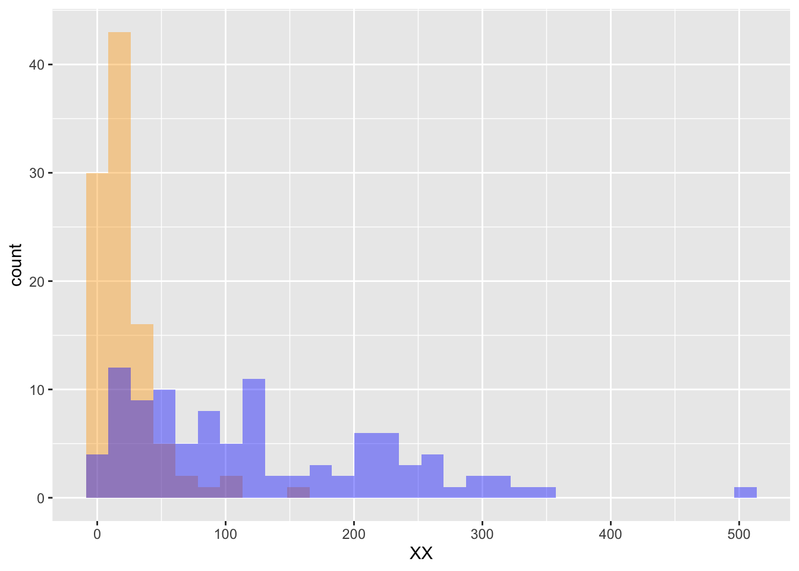

library(MASS)
library(ggplot2)
set.seed(117); nn = 100
dat = data.frame(
XX = c(rnegbin( nn, mu = 20, theta = 1.0 ),
rnegbin( nn, mu = 120, theta = 1.5 )),
yy = rep(letters[1:2],each = nn) )
ggplot(dat,aes(x=XX)) +
geom_histogram(data=subset(dat,yy == 'a'),fill = "orange", alpha = 0.4) +
geom_histogram(data=subset(dat,yy == 'b'),fill = "blue", alpha = 0.4)